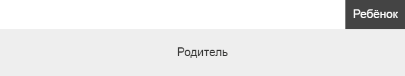

Вёрстка
В предыдущей главе мы узнали, что каждый элемент на странице является прямоугольником. В этой главе мы увидим, как выложить несколько блоков на странице.
block, inline и inline-block
Что касается расположения, свойство display имеет три значения, вы должны выбрать наиболее подходящее. Вот основные различия между тем, как эти три типа отображаются:
- block (блочные). Ширина соответствует размеру родителя и для блока можно задать ширину и высоту. Высота определяется содержимым.
- inline (строчные). Ширина и высота определяется содержимым и нельзя задать ширину и высоту. Думайте об этом как о плавающем в абзаце слове.
- inline-block (строчно-блочные). Такой же, как и block, за исключением того, что ширина определяется содержимым.
Ниже представлены элементы каждого из трёх типов display со следующим дополнительным CSS, который применяется ко всем элементам:
* {
background: #eee;
border: .125em solid;
margin-bottom: .5em;
padding: .5em
}
Следует отметить одну вещь — это разница между inline и inline-block. У строчных элементов padding отображается как .5em, а border как .125em, но только левые и правые из них (а не верхние и нижние) на самом деле влияют на расположение. В то время элементы inline-block меняют положение самих себя в макете из-за padding и border, подобно блочным элементам.
Также заметьте, что при установке ширины в 20% для всех элементов, блочные элементы по прежнему не группируются. При условии, что к ним не примешивается свойство float, блочные элементы не допускают горизонтальных соседей.
Горизонтальная прокрутка с inline-block
Разделы с горизонтальной прокруткой могут оказаться сложными. К счастью, это то место, где может помочь inline-block.
Скажем, я хочу отобразить код с цветом фона, который применяется к каждой строке текста при наведении на неё курсора.
body { background: red /* Я знаю, это странно когда вся страница красная, но иногда это то, что вам просто надо сделать... */}Если вы прокрутите вправо, то увидите, что цвет строки при наведении не распространяется до конца вправо. Это потому, что каждая строка обёрнута блочным элементом, размер которого совпадает с шириной родителя, а не с шириной прокрутки своего родителя.
После добавления элемента inline-block, которым оборачиваются все строки, мы получим желаемую прокрутку и элементы строки (всё ещё block) теперь заполняют ширину этого элемента совпадающей с шириной прокрутки всего блока с кодом. Это потому, что размер содержимого в данном случае — это самая длинная строка.
body { background: red /* Я знаю, это странно когда вся страница красная, но иногда это то, что вам просто надо сделать... */}html и body
Элементы html и body прямоугольны, как и любые другие элементы на странице. Мы рассмотрим их подробнее дальше, но сейчас просто знайте, что оба они блочные.
Таблицы
Таблицы безумны и в соответствующей главе мы их рассмотрим подробнее. Но относительно вёрстки думайте о таблицах как об элементах inline-block, но с одним особым свойством: дочерний table-cell может центрировать свой контент по вертикали.
Помимо относительно нового и экспериментального значения flex у свойства display (на котором мы остановимся в следующей главе), ни один другой элемент не может сделать подобного.
Так что относительно вёрстки думайте о таблицах в качестве инструмента, который может использоваться для центрирования произвольного содержимого вертикально.
Центрирование по вертикали при неизвестной высоте
Центрирование по вертикали с помощью таблицы проще не бывает.
Но если вы для этой цели используете таблицу (и не отображаете табличные данные), вместо таблицы вы должны использовать другой элемент (<div>, например) и установить для него свойство display как table, чтобы имитировать поведение таблицы.
<style>
.vertical-outer {
display: table;
height: 10em
}
.vertical-inner {
display: table-cell;
vertical-align: middle
}
</style>
<div class="vertical-outer">
<div class="vertical-inner">
<p>Я по центру и это даже не смешно!</p>
</div>
</div>Вот и всё!
В качестве отступления, центрировать что-то по вертикали тривиально, когда вам известна высота. Вначале позиционируем элемент, затем задаём top и bottom с одинаковым значением (0 работает), ставим желаемый height, а затем устанавливаем margin-top и margin-bottom как auto.
Выравнивание текста
В основном, text-align позволяет выровнять текст, дочерние строчные элементы и дочерние строчно-блочные элементы по левому краю, правому краю, по центру или по ширине. Вам это должно быть знакомо, если вы хоть раз использовали текстовый редактор.
Теперь немного магии.
Сетка с text-align: justify
Поскольку элементы inline-block рассматриваются более или менее как текст, вы можете использовать text-align: justify в списке элементов inline-block, чтобы создать структуру сетки.
<style>
.grid {
border: .125rem solid;
text-align: justify;
font-size: 0;
padding: 4% 4% 0 4%
}
.box {
font-size: 1rem;
display: inline-block;
background: #eee;
border: .125em solid;
width: 30%;
padding: 2%
}
/* Всё, кроме последних трёх блоков */
.box:nth-last-child(n+5) {
margin-bottom: 4%
}
.break {
display: inline-block;
width: 30%;
height: 0
}
</style>
<div class="grid">
<div class="box">Колонка</div>
<div class="box">Колонка</div>
<div class="box">Колонка</div>
<div class="box">Колонка</div>
<div class="box">Колонка</div>
<div class="box">Колонка</div>
<div class="break"></div>
</div>ширина:
Изменяйте ширину блоков и заметьте, что text-align: justify сохраняет сетку нетронутой.
float
Свойство float настолько безумно, что о нём следует сказать отдельно.
Когда дело доходит до позиционирования, основное что вам нужно знать — плавающие элементы ведут себя как элементы inline-block, независимо от того, какое значение свойства display на самом деле задано.
Правда, в настоящее время из-за того что inline-block поддерживается довольно широко, на долю float осталось немного. Мы по-прежнему держимся за него, поскольку это туз в рукаве и вы должны знать, как использовать его на скорую руку. Но пока что не волнуйтесь об этом слишком много.
В то же время, вы можете прочитать об отношении между display, position и float в спецификации CSS2.
Позиционирование
Вот где начинается настоящее веселье.
Элемент называется «позиционированным», если у него свойство position равно любому значению, кроме static.
Когда элемент позиционирован, он выкладывается в соответствии со значениями, заданных свойствами top, bottom, left и right.
Это означает что данные свойства не только устанавливают положение (или движение) элемента, они также могут изменить размеры элементов. Например, при position равным absolute или fixed вы можете установить top и bottom и по существу навязать фиксированную высоту элементу. Приоритет здесь может оказаться довольно сложным, но, как правило, если вы укажите top, bottom и height для позиционированного элемента, то значение height игнорируется.
Свойство position может принимать следующие значения:
- static. По умолчанию. Любые свойства top, right, bottom или left игнорируются.
- absolute. Элемент будет удалён из своей исходной позиции в макете и позиционирован относительно ближайшего позиционированного родителя.
- fixed. Элемент будет удалён из своей исходной позиции в макете и позиционирован относительно окна. На мобильных устройствах с зумом может быть неопределённое поведение.
- relative. В отличие от абсолютного или фиксированного положения, элемент остаётся в исходном месте макета и свойства top, right, bottom или left только выталкивают его из этого положения.
Этот материал может запутать, так что мы выделим некоторые важные вещи из этих описаний.
- Элементы absolute и fixed не являются частью обычной схемы документа. Когда меняются их размеры, это затрагивает только их дочерние элементы (небольшим исключением является то, что абсолютно позиционируемые элементы могут вызвать прокрутку и это повлияет на расположение других элементов на странице).
- Элементы static и relative являются частью макета. Когда они меняются, это влияет на их соседей.
- Относительные элементы, которые сдвигаются через top, right, bottom или left, не влияют на соседей. Вместо этого, эти соседи действуют так, словно их никто не сдвигал с исходного положения (исключение с прокруткой также действует и здесь).
- Так называемый относительный элемент не должен сбивать с толку, потому что дочерние элементы позиционируются «относительно» него. Скорее всего, такое название описывает, что вы можете сдвинуть элемент «относительно» его исходного положения.
А теперь снова немного магии.
100% top, bottom, left или right
Позиционирование дочернего элемента за пределами его родителя немного сложнее.
Наивный подход заключается в использовании отрицательного свойства позиционирования, которое соответствует его размеру.
Например:
.parent {
position: relative;
text-align: center;
padding: 1.25em;
background: #eee
}
.child {
position: absolute;
height: 2.5em;
top: -2.5em;
right: 0;
line-height: 2.5em;
background: #444;
color: #fff;
padding: 0 .625em
}
Обратите внимание на следующие две строки CSS:
height: 2.5em;
top: -2.5em;Эта часть не идеальна, потому что не DRY и потому что мы должны указать высоту. При возможности лучше не задавать фиксированные значения в CSS. Чем большим вещам вы зададите размеры по их содержимому, тем лучше, потому что это означает, что ваш дизайн является более гибким, поддерживает больше сценариев использования и меньше вероятность появления будущих ошибок.
Так что мы можем сделать? Использовать в качестве значения 100%.
.parent {
position: relative;
text-align: center;
padding: 1.25em;
background: #eee
}
.child {
position: absolute;
bottom: 100%;
right: 0;
background: #444;
color: #fff;
padding: .625em
}Заметьте, что в этой версии мы упростили padding и line-height, потому что дочерний блок определяет размер по своему содержимому, а не наоборот.
Трансформация
Она, безусловно, заслуживает свой собственный раздел. Трансформация живёт там, где много реальной магии. Но сейчас, обратите внимание на то, что трансформируемые элементы, к сожалению, рассматриваются как позиционированные, даже если применяется значение static. Фиксация этой информации в памяти или где-то ещё, вероятно, сожжёт вам мозг.
Дальнейшее чтение
- Quirksmode: display — большая игрушка для экспериментирования со значениями разных свойств.
- MDN: Layout
- MDN: position

Все материалы сайта доступны по лицензии Creative Commons «Attribution-NonCommercial» («Атрибуция — Некоммерческое использование») 4.0 Всемирная, если не указано иное.